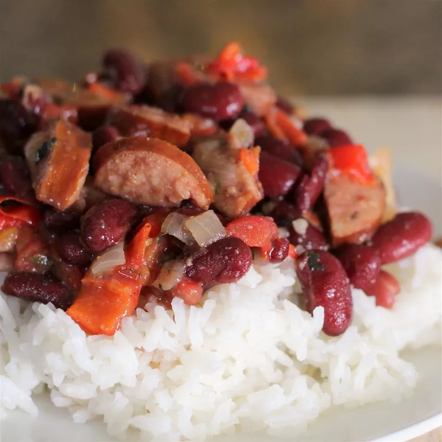

← Back
Jessica's Red Beans and Rice

Prep Time:20 mins
Cook Time:30 mins
Total Time:50 mins
Servings:6
Yield:6 servings
Ingredients
- 1 pound smoked sausage, sliced
- 1 onion, chopped, divided
- 1 green bell pepper, chopped, divided
- 1 jalapeno pepper, finely diced, divided
- 2 cups water
- 2 cubes chicken bouillon
- 1 tablespoon salt-free garlic and herb seasoning
- 1 tablespoon Cajun seasoning blend
- 1 teaspoon red pepper flakes
- 1 bay leaf
- 3 (16 ounce) cans kidney beans, drained and rinsed
- 1 (14.5 ounce) can diced tomatoes
- salt to taste
- 3 cups cooked white rice
Directions